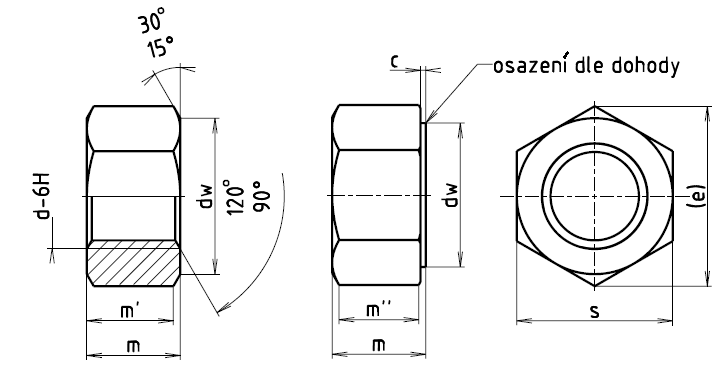

Příklad označení šestihranné matice, typ 2 se závitem M16×1,5, pevnostní třídy 12:
ŠESTIHRANNÁ MATICE ISO 8674–M16×1,5–12
| Závit d×P | M8×1 | M10×1 | M12×1,5 | (M14×1,5) | M16×1,5 | (M18×1,5) | M20×1,5 | (M22×1,5) |
|---|---|---|---|---|---|---|---|---|
| (M10×1,25) | (M12×1,25) | (M20×2) | ||||||
| cmax. | 0,6 | 0,6 | 0,6 | 0,6 | 0,8 | 0,8 | 0,8 | 0,8 |
| cmin. | 0,15 | 0,15 | 0,15 | 0,15 | 0,2 | 0,2 | 0,2 | 0,2 |
| da min. | 8,0 | 10,0 | 12,0 | 14,0 | 16,0 | 18,0 | 20,0 | 22,0 |
| da max. | 8,75 | 10,8 | 13,0 | 15,1 | 17,3 | 19,5 | 21,6 | 23,7 |
| dw min. | 11,63 | 14,63 | 16,63 | 19,64 | 22,49 | 24,85 | 27,7 | 31,35 |
| emin. | 14,38 | 17,77 | 20,03 | 23,36 | 26,75 | 29,56 | 32,95 | 37,29 |
| mmax. | 7,5 | 9,3 | 12 | 14,1 | 16,4 | 17,6 | 20,3 | 21,8 |
| mmin. | 7,14 | 8,94 | 11,57 | 13,4 | 15,7 | 16,9 | 19 | 20,5 |
| m'min. | 5,71 | 7,15 | 9,26 | 10,72 | 12,56 | 13,52 | 15,2 | 16,4 |
| m''min. | 5 | 6,26 | 8,1 | 9,38 | 10,99 | 11,83 | 13,3 | 14,3 |
| smax. | 13 | 16 | 18 | 21 | 24 | 27 | 30 | 34 |
| smin. | 12,73 | 15,73 | 17,73 | 20,67 | 23,67 | 26,16 | 29,16 | 33 |
| Závit d×P | M24×2 | (M27×2) | M30×2 | (M33×2) | M36×3 |
|---|---|---|---|---|---|
| cmax. | 0,8 | 0,8 | 0,8 | 0,8 | 0,8 |
| cmin. | 0,2 | 0,2 | 0,2 | 0,2 | 0,2 |
| da min. | 24,0 | 27,0 | 30,0 | 33,0 | 36 |
| da max. | 25,9 | 29,1 | 32,4 | 35,6 | 38,9 |
| dw min. | 33,25 | 38,0 | 42,75 | 46,55 | 51,11 |
| emin. | 33,25 | 38,0 | 42,75 | 46,55 | 51,11 |
| mmax. | 23,9 | 26,7 | 28,6 | 32,5 | 34,7 |
| mmin. | 22,6 | 25,4 | 27,3 | 30,9 | 33,1 |
| m'min. | 18,08 | 20,32 | 21,84 | 24,72 | 26,48 |
| m''min. | 15,82 | 17,78 | 19,11 | 21,63 | 23,17 |
| smax. | 36 | 41 | 46 | 50 | 55 |
| smin. | 35 | 40 | 45 | 49 | 53,8 |
| Materiál | Ocel | |
|---|---|---|
| Všeobecné požadavky | Mezinárodní norma | ISO 8992 |
| Mechanické vlastnosti | Pevnostní třída1) (materiál) |
Pro d ≤ 16 mm: 8 12 |
| pro d ≤ 39 mm: 10 | ||
| Mezinárodní norma | ISO 898-6 | |
| Mezní rozměry, tolerance tvaru a polohy | Výrobní třída | A: pro d ≤ 16mm B: pro d > 16mm |
| Mezinárodní norma | ISO 4759-1 | |
| Povrch | Požadavky na elektrolyticky vyloučené povlaky viz ISO 4042. Jestliže je požadována jiná povrchová ochrana, musí být dohodnuta mezi dodavatelem a odběratelem. |
|